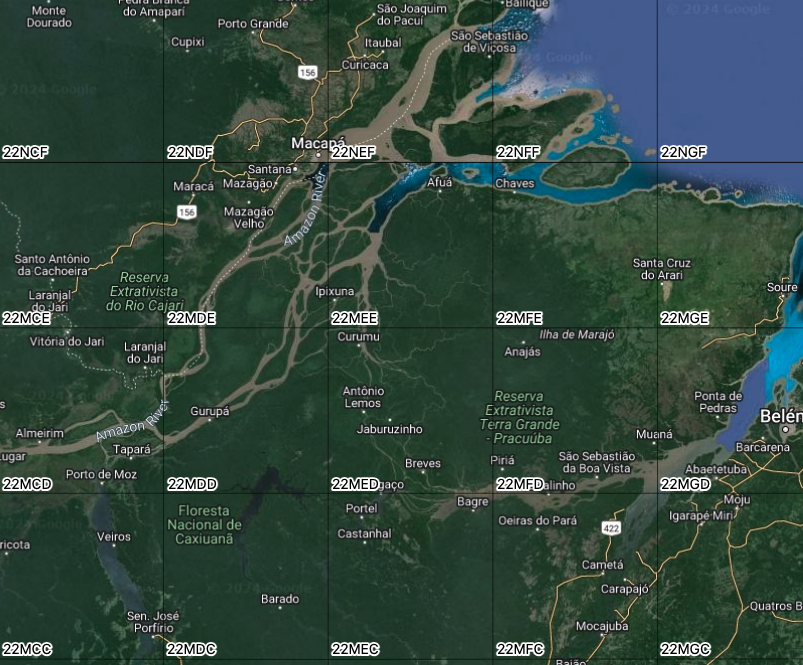
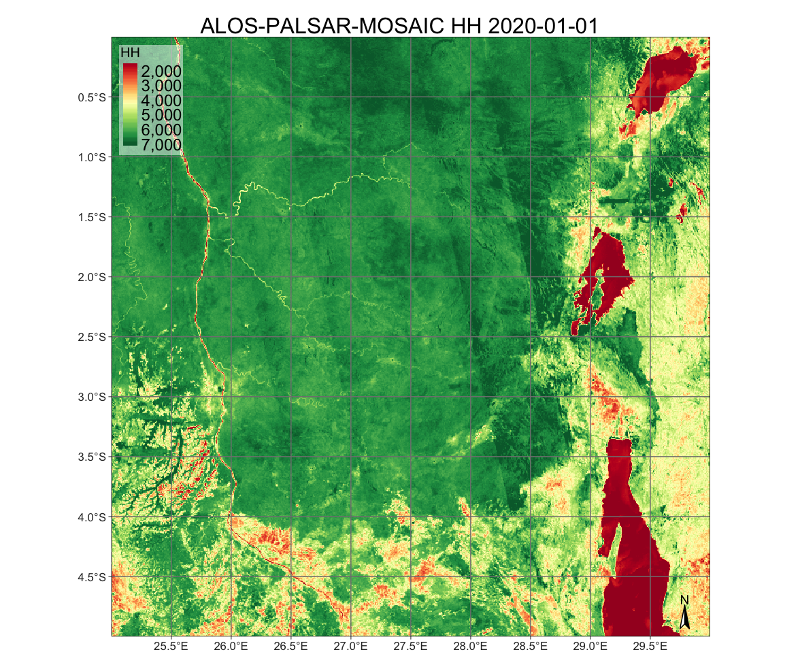

4 Analysis-ready image collections
Configurations to run the chapter
from pysits import *
import pandas as pd
pd.set_option("display.max_columns", 100)
pd.set_option("display.max_rows", 4)
# set bookdir if it does not exist
from pathlib import Path
home = Path.home()
tempdir_py = home + "/sitsbook/tempdir/Python/dc_ardcollections"
Path(tempdir_py).mkdir(parents=True, exist_ok=True)4.1 Introduction
ARD (analysis-ready) image collections are organized into spatial partitions. Sentinel-2/2A images follow the Military Grid Reference System (MGRS) tiling system, which divides the world into 60 UTM zones of 8 degrees of longitude. Each zone contains blocks of 6 degrees of latitude. Blocks are split into tiles of 110 \(\times\) 110 km\(^2\) with a 10 km overlap. Figure Figure 4.1 shows the MGRS tiling system for a part of the northeastern coast of Brazil, contained in UTM zone 24, block M.

The Landsat-4/5/7/8/9 satellites use the Worldwide Reference System (WRS-2), which divides the coverage of Landsat satellites into images identified by path and row (see Figure @ref(fig:wrs)). The path is the descending orbit of the satellite; the WRS-2 system has 233 paths per orbit, and each path has 119 rows, where each row refers to a latitudinal center line of a frame of imagery. Images in WRS-2 are geometrically corrected to the UTM projection.

4.2 Image collections handled by sits
In version 1.5.3,sits supports access to the following ARD image cloud providers:
- Amazon Web Services (AWS): Open data Sentinel-2/2A Level-2A collections for the Earth’s land surface.
- Brazil Data Cube (BDC): Open data collections of Sentinel-2/2A, Landsat-8, CBERS-4/4A, and MOD13Q1 products for Brazil. These collections are organized as regular data cubes.
- Copernicus Data Space Ecosystem (CDSE): Open data collections of Sentinel-1 RTC and Sentinel-2/2A images.
- Digital Earth Africa (DEAFRICA): Open data collections of Sentinel-1 RTC, Sentinel-2/2A, Landsat-5/7/8/9 for Africa. Additional products include ALOS_PALSAR mosaics, DEM_COP_30, NDVI_ANOMALY based on Landsat data, and monthly and daily rainfall data from CHIRPS.
- Digital Earth Australia (DEAUSTRALIA): Open data ARD collections of Sentinel-2A/2B and Landsat-5/7/8/9 images, yearly geomedians of Landsat 5/7/8 images; yearly fractional land cover from 1986 to 2024.
- Harmonized Landsat-Sentinel (HLS): HLS, provided by NASA, is an open data collection that processes Landsat 8 and Sentinel-2 imagery to a common standard.
- Microsoft Planetary Computer (MPC): Open data collections of Sentinel-1 GRD, Sentinel-1 RTC, Sentinel-2/2A, Landsat-4/5/7/8/9 images for the Earth’s land areas. Also supported are the Copernicus DEM-30 and MOD13Q1, MOD10A1, MOD09A1 products, and the Harmonized Landsat-Sentinel collections (HLSL30 and HLSS30).
- Swiss Data Cube (SDC): Collection of Sentinel-2/2A and Landsat-8 images for Switzerland.
- Terrascope: Cloud service with EO products, which includes the ESA World Cover map.
- USGS: Landsat-4/5/7/8/9 collections available in AWS, which require access payment.
In addition, sits supports the use of Planet monthly mosaics stored as local files. For a detailed description of the providers and collections supported by sits, please run sits_list_collections().
4.3 Accessing ARD image collections in cloud providers

To obtain information on ARD image collections from cloud providers, sits uses the SpatioTemporal Asset Catalogue (STAC) protocol, a specification of geospatial information that many large image collection providers have adopted. A ‘spatiotemporal asset’ is any file that represents information about the Earth captured at a specific space and time. To access STAC endpoints, sits uses the rstac R package.
The function sits_cube() supports access to image collections from cloud services; it has the following parameters:
-
source: Name of the provider. -
collection: A collection available in the provider and supported bysits. To find out which collections are supported bysits, seesits_list_collections(). -
platform: Optional parameter specifying the platform in collections with multiple satellites. -
tiles: Set of tiles of image collection reference system. Eithertilesorroishould be specified. -
roi: A region of interest. Either: (a) a named vector (lon_min,lon_max,lat_min,lat_max) in WGS 84 coordinates; (b) ansfobject; (c) a path to a shapefile polygon; or (d) A named vector (xmin,xmax,ymin,ymax) with XY coordinates. All images intersecting the convex hull of theroiare selected. -
bands: Optional parameter with the bands to be used. If missing, all bands from the collection are used. -
orbit: Optional parameter required only for Sentinel-1 images (default = “descending”). -
start_date: The initial date for the temporal interval containing the time series of images. -
end_date: The final date for the temporal interval containing the time series of images.
The result of sits_cube() is a tibble with a description of the selected images required for further processing. It does not contain the actual data, but only pointers to the images. The attributes of individual image files can be accessed by listing the file_info column of the tibble.
4.4 Amazon Web Services
Amazon Web Services (AWS) holds two kinds of collections: open-data and requester-pays. Open-data collections can be accessed without cost. Requester-pays collections require payment from an AWS account. Currently, sits supports the SENTINEL-2-L2A collection, which is open data. The bands at 10 m resolution are B02, B03, B04, and B08. The 20 m bands are B05, B06, B07, B8A, B11, and B12. Bands B01 and B09 are available at 60 m resolution. A CLOUD band is also available. The example below shows how to access one tile of the open-data SENTINEL-2-L2A collection. The tiles parameter allows selecting the desired area according to the MGRS reference system.
# Create a data cube covering an area in Brazil
s2_23MMU_cube <- sits_cube(
source = "AWS",
collection = "SENTINEL-2-L2A",
tiles = "23MMU",
bands = c("B02", "B8A", "B11", "CLOUD"),
start_date = "2018-07-12",
end_date = "2019-07-28"
)
plot(s2_23MMU_cube,
red = "B11",
blue = "B02",
green = "B8A",
date = "2018-10-05"
)# Create a data cube covering an area in Brazil
s2_23MMU_cube = sits_cube(
source = "AWS",
collection = "SENTINEL-2-L2A",
tiles = "23MMU",
bands = ["B02", "B8A", "B11", "CLOUD"],
start_date = "2018-07-12",
end_date = "2019-07-28"
)
plot(s2_23MMU_cube,
red = "B11",
blue = "B02",
green = "B8A",
date = "2018-10-05"
)
4.5 Microsoft Planetary Computer
The sits package supports access to open-data collection from Microsoft’s Planetary Computer (MPC), including SENTINEL-1-GRD, SENTINEL-1-RTC, SENTINEL-2-L2A, LANDSAT-C2-L2, COP-DEM-GLO-30 (Copernicus Global DEM at 30-meter resolution) and MOD13Q1-6.1 (version 6.1 of the MODIS MOD13Q1 product). Access to the non-open data collections is available for users that have registered with MPC.
4.5.1 SENTINEL-2/2A images in MPC
The SENTINEL-2/2A ARD images available in MPC have the same bands and resolutions as those available in AWS (see above). The example below shows how to access the SENTINEL-2-L2A collection.
# Create a data cube covering an area in the Brazilian Amazon
s2_20LKP_cube_MPC <- sits_cube(
source = "MPC",
collection = "SENTINEL-2-L2A",
tiles = "20LKP",
bands = c("B02", "B8A", "B11", "CLOUD"),
start_date = "2019-07-01",
end_date = "2019-07-28"
)
# Plot a color composite of one date of the cube
plot(s2_20LKP_cube_MPC, red = "B11", blue = "B02", green = "B8A",
date = "2019-07-18"
)# Create a data cube covering an area in the Brazilian Amazon
s2_20LKP_cube_MPC = sits_cube(
source = "MPC",
collection = "SENTINEL-2-L2A",
tiles = "20LKP",
bands = ["B02", "B8A", "B11", "CLOUD"],
start_date = "2019-07-01",
end_date = "2019-07-28"
)
# Plot a color composite of one date of the cube
plot(s2_20LKP_cube_MPC, red = "B11", blue = "B02", green = "B8A",
date = "2019-07-18"
)
4.5.2 LANDSAT-C2-L2 images in MPC
The LANDSAT-C2-L2 collection provides access to data from the Landsat-4/5/7/8/9 satellites. Images from these satellites have been intercalibrated to ensure data consistency. For compatibility between the different Landsat sensors, the band names are BLUE, GREEN, RED, NIR08, SWIR16, and SWIR22. All images have 30 m resolution. For this collection, tile search is not supported; the roi parameter should be used. The example below shows how to retrieve data from a region of interest covering the city of Brasília in Brazil.
# Read a ROI that covers part of the Northeastern coast of Brazil
roi <- c(lon_min = -43.5526, lat_min = -2.9644,
lon_max = -42.5124, lat_max = -2.1671)
# Select the cube
s2_L8_cube_MPC <- sits_cube(
source = "MPC",
collection = "LANDSAT-C2-L2",
bands = c("BLUE", "RED", "GREEN", "NIR08", "SWIR16", "CLOUD"),
roi = roi,
start_date = "2019-06-01",
end_date = "2019-09-01"
)
# Plot the tile that covers the Lencois Maranhenses
plot(s2_L8_cube_MPC)# Read a ROI that covers part of the Northeastern coast of Brazil
roi = {"lon_min" : -43.5526, "lat_min" : -2.9644,
"lon_max" : -42.5124, "lat_max" : -2.1671}
# Select the cube
s2_L8_cube_MPC = sits_cube(
source = "MPC",
collection = "LANDSAT-C2-L2",
bands = ["BLUE", "RED", "GREEN", "NIR08", "SWIR16", "CLOUD"],
roi = roi,
start_date = "2019-06-01",
end_date = "2019-09-01"
)
# Plot the tile that covers the Lencois Maranhenses
plot(s2_L8_cube_MPC)4.5.3 SENTINEL-1-GRD images in MPC
Sentinel-1 GRD products consist of focused SAR data that has been detected, multi-looked, and projected to ground range using the WGS84 Earth ellipsoid model. GRD images are subject to variations in the radar signal’s intensity due to topographic effects, antenna pattern, range spreading loss, and other radiometric distortions. The most common types of distortions include foreshortening, layover, and shadowing.
Foreshortening occurs when the radar signal strikes a steep terrain slope facing the radar, causing the slope to appear compressed in the image. Features like mountains can appear much steeper than they are, and their true heights can be difficult to interpret. Layover happens when the radar signal reaches the top of a tall feature (like a mountain or building) before it reaches the base. As a result, the top of the feature is displaced towards the radar and appears in front of its base. This results in a reversal of the order of features along the radar line of sight, making the image interpretation challenging. Shadowing occurs when a radar signal is obstructed by a tall object, casting a shadow on the area behind it that the radar cannot illuminate. The shadowed areas appear dark in SAR images, and no information is available from these regions, similar to optical shadows.
Access to Sentinel-1 GRD images can be done either by MGRS tiles (tiles) or by region of interest (roi). We recommend using the MGRS tiling system for specifying the area of interest, since when these images are regularized, they will be reprojected into MGRS tiles. By default, only images in descending orbit are selected.
The following example shows how to create a data cube of S1 GRD images over a region in Mato Grosso, Brazil, which is a deforested area of the Amazon forest. The resulting cube will not follow any specific projection and its coordinates will be stated as EPSG 4326 (latitude/longitude). Its geometry is derived from the SAR slant-range perspective; thus, it will appear skewed in relation to the Earth’s longitude.
cube_s1_grd = sits_cube(
source = "MPC",
collection = "SENTINEL-1-GRD",
bands = ["VV"],
orbit = "descending",
tiles = ["21LUJ","21LVJ"],
start_date = "2021-08-01",
end_date = "2021-09-30"
)
plot(cube_s1_grd, band = "VV", palette = "Greys")As explained earlier in this chapter, in areas with large elevation differences, Sentinel-1 GRD images will have geometric distortions. For this reason, whenever possible, we recommend the use of RTC (radiometrically terrain-corrected) images as described in the next section.
4.5.4 SENTINEL-1-RTC images in MPC
An RTC SAR image has undergone corrections for both geometric and radiometric distortions caused by the terrain. The purpose of RTC processing is to enhance the interpretability and usability of SAR images for various applications by providing a more accurate representation of the Earth’s surface. The radar backscatter values are normalized to account for these variations, ensuring that the image accurately represents the reflectivity of surface features.
The terrain correction addresses geometric distortions caused by the side-looking geometry of SAR imaging, such as foreshortening, layover, and shadowing. It uses a Digital Elevation Model (DEM) to model the terrain and reproject the SAR image from the slant range (radar line of sight) to the ground range (true geographic coordinates). This process aligns the SAR image with the actual topography, providing a more accurate spatial representation.
cube_s1_rtc = sits_cube(
source = "MPC",
collection = "SENTINEL-1-RTC",
bands = ["VV", "VH"],
orbit = "descending",
tiles = "18NZM",
start_date = "2021-08-01",
end_date = "2021-09-30"
)
plot(cube_s1_rtc, band = "VV", palette = "Greys")
The above image is from the central region of Colombia, a country with large variations in altitude due to the Andes Mountains. Users are invited to compare this image with the one from the SENTINEL-1-GRD collection and observe the significant geometrical distortions of the GRD image compared with the RTC one.
4.5.5 Copernicus DEM 30 meter images in MPC
The Copernicus Digital Elevation Model 30-meter global dataset (COP-DEM-GLO-30) is a high-resolution topographic data product provided by the European Space Agency (ESA) under the Copernicus Program. The vertical accuracy of the Copernicus DEM 30-meter dataset is typically within a few meters, but this can vary depending on the region and the original data sources. The primary data source for the Copernicus DEM is data from the TanDEM-X mission, developed by the German Aerospace Center (DLR). TanDEM-X provides high-resolution radar data through interferometric synthetic aperture radar (InSAR) techniques.
The Copernicus DEM 30-meter is organized in a 1\(^\circ\) by 1\(^\circ\) grid. In sits, access to COP-DEM-GLO-30 images can be done either by MGRS tiles (tiles) or by region of interest (roi). In both cases, the cube is retrieved based on the parts of the grid that intersect the region of interest or the chosen tiles.
4.6 Brazil Data Cube
The Brazil Data Cube (BDC) is built by Brazil’s National Institute for Space Research (INPE) to provide regular EO data cubes from CBERS, LANDSAT, SENTINEL-2, and TERRA/MODIS satellites for environmental applications. The collections available in the BDC are: LANDSAT-OLI-16D (Landsat-8 OLI, 30 m resolution, 16-day intervals), SENTINEL-2-16D (Sentinel-2A and 2B MSI images at 10 m resolution, 16-day intervals), CBERS-WFI-16D (CBERS-4 WFI, 64 m resolution, 16-day intervals), CBERS-WFI-8D (CBERS-4 and 4A WFI images, 64 m resolution, 8-day intervals), and MOD13Q1-6.1 (MODIS MOD13SQ1 product, collection 6, 250 m resolution, 16-day intervals). For more details, use sits_list_collections(source = "BDC").
The BDC uses three hierarchical grids based on the Albers Equal Area projection and SIRGAS 2000 datum. The large grid has tiles of 4224.4 \(\times4\) 224.4 km2 and is used for CBERS-4 AWFI collections at 64 m resolution; each CBERS-4 AWFI tile contains images of 6600 \(\times\) 6600 pixels. The medium grid is used for Landsat-8 OLI collections at 30 m resolution; tiles have an extent of 211.2 \(\times\) 211.2 km2, and each image has 7040 \(\times\) 7040 pixels. The small grid covers 105.6 \(\times\) 105.6 km2 and is used for Sentinel-2 MSI collections at 10 m resolutions; each image has 10560 \(\times\) 10560 pixels. The data cubes in the BDC are regularly spaced in time and cloud-corrected [1].
To access the BDC, users must provide their credentials using environment variables, as shown below. Obtaining a BDC access key is free. Users must register at the BDC site to obtain a key. Please include your BDC access key in your .Rprofile.
Sys.setenv(BDC_ACCESS_KEY = "<your_bdc_access_key>")In the example below, the data cube is defined as one tile (“005004”) of CBERS-WFI-16D collection, which contains CBERS AWFI images at 16-day resolution.
# Define a tile from the CBERS-4/4A AWFI collection
cbers_tile <- sits_cube(
source = "BDC",
collection = "CBERS-WFI-16D",
tiles = "005004",
bands = c("B13", "B14", "B15", "B16", "CLOUD"),
start_date = "2021-05-01",
end_date = "2021-09-01")
# Plot one time instance
plot(cbers_tile,
red = "B15",
green = "B16",
blue = "B13",
date = "2021-05-09")# Define a tile from the CBERS-4/4A AWFI collection
cbers_tile = sits_cube(
source = "BDC",
collection = "CBERS-WFI-16D",
tiles = "005004",
bands = ["B13", "B14", "B15", "B16", "CLOUD"],
start_date = "2021-05-01",
end_date = "2021-09-01")
# Plot one time instance
plot(cbers_tile,
red = "B15",
green = "B16",
blue = "B13",
date = "2021-05-09")
4.7 Copernicus Data Space Ecosystem (CDSE)
The Copernicus Data Space Ecosystem (CDSE) is a cloud service designed to support access to Earth observation data from the Copernicus Sentinel missions and other sources. It is designed and maintained by the European Space Agency (ESA) with support from the European Commission.
Configuring user access to CDSE involves several steps to ensure proper registration, access to data, and utilization of the platform’s tools and services. Visit the Copernicus Data Space Ecosystem registration page. Complete the registration form with your details, including name, email address, organization, and sector. Confirm your email address through the verification link sent to your inbox.
After registration, you will need to obtain access credentials to the S3 service implemented by CDSE, which can be obtained using the CDSE S3 credentials site. The site will request that you add a new credential. You will receive two keys: an S3 access key and a secret access key. Take note of both and include the following lines in your .Rprofile.
Sys.setenv(
AWS_ACCESS_KEY_ID = "your access key",
AWS_SECRET_ACCESS_KEY = "your secret access key",
AWS_S3_ENDPOINT = "eodata.dataspace.copernicus.eu",
AWS_VIRTUAL_HOSTING = "FALSE"
)After including these lines in your .Rprofile, restart R for the changes to take effect. By following these steps, users will gain access to the Copernicus Data Space Ecosystem.
4.7.1 SENTINEL-2/2A images in CDSE
CDSE hosts a global collection of Sentinel-2 Level-2A images, which are processed according to the CEOS Analysis-Ready Data specifications. One example is provided below, where we present a Sentinel-2 image of the Lena River Delta in Siberia during summertime.
# obtain a collection of images of a tile covering part of Lena delta
lena_cube <- sits_cube(
source = "CDSE",
collection = "SENTINEL-2-L2A",
bands = c("B02", "B04", "B8A", "B11", "B12"),
start_date = "2023-05-01",
end_date = "2023-09-01",
tiles = c("52XDF")
)
# plot an image from summertime
plot(lena_cube, date = "2023-07-06", red = "B12", green = "B8A", blue = "B04")# obtain a collection of images of a tile covering part of Lena delta
lena_cube = sits_cube(
source = "CDSE",
collection = "SENTINEL-2-L2A",
bands = ["B02", "B04", "B8A", "B11", "B12"],
start_date = "2023-05-01",
end_date = "2023-09-01",
tiles = "52XDF"
)
# plot an image from summertime
plot(lena_cube, date = "2023-07-06", red = "B12", green = "B8A", blue = "B04")
4.7.2 SENTINEL-1-RTC images in CDSE
An important product under development at CDSE is the radiometric terrain corrected (RTC) Sentinel-1 images. In CDSE, this product is referred to as normalized terrain backscatter (NRB). The S1-NRB product contains radiometrically terrain corrected (RTC) gamma nought backscatter (γ⁰) processed from Single Look Complex (SLC) Level-1A data. Each acquired polarization is stored in an individual binary image file.
All images are projected and gridded into the United States Military Grid Reference System (US-MGRS). The use of the US-MGRS tile grid ensures a very high level of interoperability with Sentinel-2 Level-2A ARD products making it easy to also set up complex analysis systems that exploit both SAR and optical data. While speckle is inherent in SAR acquisitions, speckle filtering is not applied to the S1-NRB product in order to preserve spatial resolution. Some applications (or processing methods) may require spatial or temporal filtering for stationary backscatter estimates.
For more details, please refer to the S1-NRB product website. Global coverage is expected to grow as ESA expands the S1-RTC archive. The following example shows an S1-RTC image for the Rift Valley in Ethiopia.
# retrieve a S1-RTC cube and plot
s1_cube = sits_cube(
source = "CDSE",
collection = "SENTINEL-1-RTC",
bands = ["VV", "VH"],
orbit = "descending",
start_date = "2023-01-01",
end_date = "2023-12-31",
tiles = "37NCH"
)
plot(s1_cube, band = "VV", date = c("2023-03-03"), palette = "Greys")4.8 Digital Earth Africa
Digital Earth Africa (DEAFRICA) is a cloud service that provides open-access Earth observation data for the African continent. The ARD image collections in sits are:
- Sentinel-2 level-2A (
SENTINEL-2-L2A), organized as MGRS tiles. - Sentinel-1 radiometrically terrain corrected (
SENTINEL-1-RTC) - Landsat-5 (
LS5-SR), Landsat-7 (LS7-SR), Landsat-8 (LS8-SR) and Landsat-9 (LS9-SR). All Landsat collections are ARD data and are organized as WRS-2 tiles. - SAR L-band images produced by PALSAR sensor onboard the Japanese ALOS satellite(
ALOS-PALSAR-MOSAIC). Data is organized in a 5\(^\circ\) by 5\(^\circ\) grid with a spatial resolution of 25 meters. Images are available annually from 2007 to 2010 (ALOS/PALSAR) and from 2015 to 2022 (ALOS-2/PALSAR-2). - Estimates of vegetation condition using NDVI anomalies (
NDVI-ANOMALY) compared with the long-term baseline condition. The available measurements are “NDVI_MEAN” (mean NDVI for a month) and “NDVI-STD-ANOMALY” (standardized NDVI anomaly for a month). - Rainfall information provided by Climate Hazards Group InfraRed Precipitation with Station data (CHIRPS) from University of California, Santa Barbara. There are monthly (
RAINFALL-CHIRPS-MONTHLY) and daily (RAINFALL-CHIRPS-DAILY) products over Africa. - Digital elevation model provided by the EC Copernicus program (
COP-DEM-30) in 30-meter resolution organized in a 1\(^\circ\) by 1\(^\circ\) grid. - Annual geomedian images for Landsat 8 and Landsat 9 (
GM-LS8-LS9-ANNUAL(LANDSAT/OLI)`) in the WRS-2 grid system. - Annual geomedian images for Sentinel-2 (
GM-S2-ANNUAL) in MGRS grid. - Rolling three-month geomedian images for Sentinel-2 (
GM-S2-ROLLING) in MGRS grid. - Semestral geomedian images for Sentinel-2 (
GM-S2-SEMIANNUAL) in MGRS grid.
Access to DEAFRICA Sentinel-2 images can be done using the tiles or roi parameter. In this example, the requested roi produces a cube that contains one MGRS tile (“35LPH”) covering an area of Madagascar that includes the Betsiboka Estuary.
dea_s2_cube = sits_cube(
source = "DEAFRICA",
collection = "SENTINEL-2-L2A",
roi = {
"lon_min" : 46.1, "lat_min" : -15.6,
"lon_max" : 46.6, "lat_max" : -16.1
},
bands = ["B02", "B04", "B08"],
start_date = "2019-04-01",
end_date = "2019-05-30"
)
plot(dea_s2_cube, red = "B04", blue = "B02", green = "B08")
The next example retrieves a set of ARD Landsat-9 data covering the Serengeti Plain in Tanzania.
dea_l9_cube <- sits_cube(
source = "DEAFRICA",
collection = "LS9-SR",
roi = c(
lon_min = 33.0, lat_min = -3.60,
lon_max = 33.6, lat_max = -3.00
),
bands = c("B04", "B05", "B06"),
start_date = "2023-05-01",
end_date = "2023-08-30"
)
plot(dea_l9_cube, date = "2023-06-26",
red = "B06", green = "B05", blue = "B04")dea_l9_cube = sits_cube(
source = "DEAFRICA",
collection = "LS9-SR",
roi = {
"lon_min" : 33.0, "lat_min" : -3.60,
"lon_max" : 33.6, "lat_max" : -3.00
},
bands = ["B04", "B05", "B06"],
start_date = "2023-05-01",
end_date = "2023-08-30"
)
plot(dea_l9_cube, date = "2023-06-26",
red = "B06", green = "B05", blue = "B04")
The following example shows how to retrieve a subset of the ALOS-PALSAR mosaic for the year 2020. The area is near the Congo-Rwanda border.
dea_alos_cube = sits_cube(
source = "DEAFRICA",
collection = "ALOS-PALSAR-MOSAIC",
roi = {
"lon_min" : 28.69, "lat_min" : -2.35,
"lon_max" : 29.35, "lat_max" : -1.56
},
bands = ["HH", "HV"],
start_date = "2020-01-01",
end_date = "2020-12-31"
)
plot(dea_alos_cube, band = "HH")
4.9 Digital Earth Australia
Digital Earth Australia (DEAUSTRALIA) is an initiative by Geoscience Australia that uses satellite data to monitor and analyze environmental changes and resources across the Australian continent. It provides many datasets offering detailed information on droughts, agriculture, water availability, floods, coastal erosion, and urban development. The DEAUSTRALIA image collections in sits are:
- GA_LS5T_ARD_3: ARD images from the Landsat-5 satellite, with bands “BLUE”, “GREEN”, “RED”, “NIR”, “SWIR-1”, “SWIR-2”, and “CLOUD”.
- GA_LS7E_ARD_3: ARD images from the Landsat-7 satellite, with the same bands as Landsat-5.
- GA_LS8C_ARD_3: ARD images from the Landsat-8 satellite, with bands “COASTAL-AEROSOL”, “BLUE”, “GREEN”, “RED”, “NIR”, “SWIR-1”, “SWIR-2”, “PANCHROMATIC”, and “CLOUD”.
- GA_LS9C_ARD_3: ARD images from the Landsat-9 satellite, with the same bands as Landsat-8.
- GA_S2AM_ARD_3: ARD images from the Sentinel-2A satellite, with bands “COASTAL-AEROSOL”, “BLUE”, “GREEN”, “RED”, “RED-EDGE-1”, “RED-EDGE-2”, “RED-EDGE-3”, “NIR-1”, “NIR-2”, “SWIR-2”, “SWIR-3”, and “CLOUD”.
- GA_S2BM_ARD_3: ARD images from the Sentinel-2B satellite, with the same bands as Sentinel-2A.
- GA_LS5T_GM_CYEAR_3: Landsat-5 geomedian images, with bands “BLUE”, “GREEN”, “RED”, “NIR”, “SWIR1”, “SWIR2”, “EDEV”, “SDEV”, “BCDEV”.
- GA_LS7E_GM_CYEAR_3: Landsat-7 geomedian images, with the same bands as Landsat-5 geomedian.
- GA_LS8CLS9C_GM_CYEAR_3: Landsat-8/9 geomedian images, with the same bands as Landsat-5 geomedian.
- GA_LS_FC_3: Landsat fractional land cover, with bands “BS”, “PV”, “NPV”.
- GA_S2LS_INTERTIDAL_CYEAR_3: Landsat/Sentinel intertidal data, with bands “ELEVATION”, “ELEVATION-UNCERTAINTY”, “EXPOSURE”, “TA-HAT”, “TA-HOT”, “TA-LOT”, “TA-LAT”, “TA-OFFSET-HIGH”, “TA-OFFSET-LOW”, “TA-SPREAD”, “QA-NDWI-CORR”, and “QA-NDWI-FREQ”.
The following code retrieves an image from Sentinel-2A.
# get roi for an MGRS tile
bbox_55KGR <- sits_mgrs_to_roi("55KGR")
# retrieve the world cover map for the chosen roi
s2_56KKV <- sits_cube(
source = "DEAUSTRALIA",
collection = "GA_S2AM_ARD_3",
tiles = "56KKV",
bands = c("BLUE", "GREEN", "RED", "NIR-2", "SWIR-2", "CLOUD"),
start_date = "2023-09-01",
end_date = "2023-11-30"
)
# plot the resulting map
plot(s2_56KKV, green = "NIR-2", blue = "BLUE", red = "SWIR-2", date = "2023-10-14")# retrieve the world cover map for the chosen tile
s2_56KKV = sits_cube(
source = "DEAUSTRALIA",
collection = "GA_S2AM_ARD_3",
tiles = "56KKV",
bands = ["BLUE", "GREEN", "RED", "NIR-2", "SWIR-2", "CLOUD"],
start_date = "2023-09-01",
end_date = "2023-11-30"
)
# plot the resulting map
plot(s2_56KKV, green = "NIR-2", blue = "BLUE", red = "SWIR-2", date = "2023-10-14")4.10 Harmonized Landsat-Sentinel
Harmonized Landsat Sentinel (HLS) is a NASA initiative that processes and harmonizes Landsat 8 and Sentinel-2 imagery to a common standard, including atmospheric correction, alignment, resampling, and corrections for BRDF (bidirectional reflectance distribution function). The purpose of the HLS project is to create a unified and consistent dataset that integrates the advantages of both systems, making it easier to work with the data.
The NASA Harmonized Landsat and Sentinel (HLS) service provides two image collections:
Landsat 8 OLI Surface Reflectance HLS (HLSL30) – The HLSL30 product includes atmospherically corrected surface reflectance from the Landsat 8 OLI sensors at 30 m resolution. The dataset includes 11 spectral bands.
Sentinel-2 MultiSpectral Instrument Surface Reflectance HLS (HLSS30) – The HLSS30 product includes atmospherically corrected surface reflectance from the Sentinel-2 MSI sensors at 30 m resolution. The dataset includes 12 spectral bands.
The HLS and Sentinel-2 tiling systems are identical (MGRS). Each tile is 109.8 km wide, with 4,900 m of overlap on each side.
To access NASA HLS, users need to register at NASA EarthData, and save their login and password in a ~/.netrc plain text file on Unix (or %HOME%_netrc in Windows). The file must contain the following fields:
machine urs.earthdata.nasa.gov
login <username>
password <password>We recommend using the earthdatalogin package to create a .netrc file with earthdatalogin::edl_netrc(). This function creates a properly configured .netrc file in the user’s home directory and sets the environment variable GDAL_HTTP_NETRC_FILE, as shown in the example. As an alternative, we recommend using the HLS collections available in Microsoft Planetary Computer. They are copies of the NASA collections and are faster to access.
library(earthdatalogin)
earthdatalogin::edl_netrc(
username = "<your user name>",
password = "<your password>"
) Images in NASA HLS can be accessed by region of interest or by tiles. The following example shows an HLS Sentinel-2 image over the Brazilian coast.
# define a region of interest
roi <- c(lon_min = -45.6422, lat_min = -24.0335,
lon_max = -45.0840, lat_max = -23.6178)
# create a cube from the HLSS30 collection
hls_cube_s2 <- sits_cube(
source = "HLS",
collection = "HLSS30",
roi = roi,
bands = c("BLUE", "GREEN", "RED", "CLOUD"),
start_date = as.Date("2020-06-01"),
end_date = as.Date("2020-09-01"),
progress = FALSE
)
# plot the cube
plot(hls_cube_s2, red = "RED", green = "GREEN", blue = "BLUE", date = "2020-06-20")# define a region of interest
roi = { "lon_min" : -45.6422, "lat_min" : -24.0335,
"lon_max" : -45.0840, "lat_max" : -23.6178 }
# create a cube from the HLSS30 collection
hls_cube_s2 = sits_cube(
source = "HLS",
collection = "HLSS30",
roi = roi,
bands = ["BLUE", "GREEN", "RED", "CLOUD"],
start_date = as.Date("2020-06-01"),
end_date = as.Date("2020-09-01"),
progress = FALSE
)
# plot the cube
plot(hls_cube_s2, red = "RED", green = "GREEN", blue = "BLUE", date = "2020-06-20")4.11 EO products from TERRASCOPE
Terrascope is an online platform for accessing open-source satellite images. This service, operated by VITO, offers a range of free Earth observation data and processing services. Currently, sits supports the World Cover 2021 maps, produced by VITO with support from the European Commission and ESA. The following code shows how to access the World Cover 2021 covering tile “22LBL”. First, we use sits_mgrs_to_roi() to get the region of interest expressed as a bounding box; this box is then entered as the roi parameter in the sits_cube() function. Since the World Cover data is available as a 3\(^\circ\) by 3\(^\circ\) grid, it is necessary to use sits_cube_copy() to extract the exact MGRS tile.
# get roi for an MGRS tile
bbox_22LBL <- sits_mgrs_to_roi("22LBL")
# retrieve the world cover map for the chosen roi
world_cover_2021 <- sits_cube(
source = "TERRASCOPE",
collection = "WORLD-COVER-2021",
roi = bbox_22LBL
)
# cut the 3 x 3 degree grid to match the MGRS tile 22LBL
world_cover_2021_20LBL <- sits_cube_copy(
cube = world_cover_2021,
roi = bbox_22LBL,
multicores = 6,
output_dir = tempdir_r
)
# plot the resulting map
plot(world_cover_2021_20LBL)# get roi for an MGRS tile
bbox_22LBL = sits_mgrs_to_roi("22LBL")
# retrieve the world cover map for the chosen roi
world_cover_2021 = sits_cube(
source = "TERRASCOPE",
collection = "WORLD-COVER-2021",
roi = bbox_22LBL
)
# cut the 3 x 3 degree grid to match the MGRS tile 22LBL
world_cover_2021_20LBL = sits_cube_copy(
cube = world_cover_2021,
roi = bbox_22LBL,
multicores = 6,
output_dir = tempdir_py
)
# plot the resulting map
plot(world_cover_2021_20LBL)